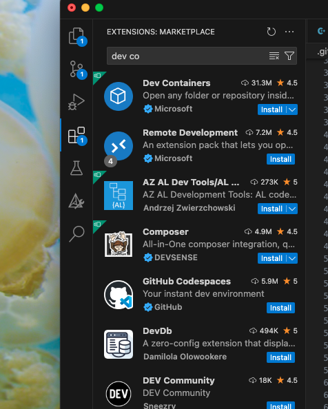
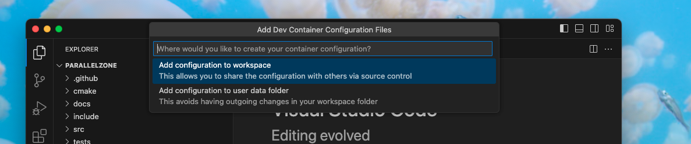
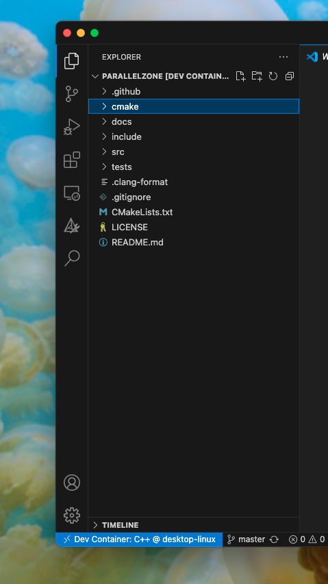
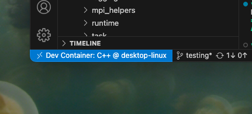

Developing in a Docker Container With VSCode
For the purposes of this page we define “Local” to mean in your native operating system (OS) / file system. “Local” is contrasted with “Docker”, which means the OS and file system being used in a Docker container.
Why?
Compared to just running VSCode in the local OS this introduces additional complexity, so why would you want to do it?
You want to develop for a different OS than what you currently have. The quintessential example is targeting true Linux from MacOS.
You want to containerize your development environment so that it is the same on all systems, i.e., no more setting it up on each computer you go to.
Scenario 1: VSCode Creates a Docker Container and Runs In It
In this scenario, we have a local directory containing source files that we want to do development on and do NOT yet have a Docker container. The files will be accessible from inside the Docker container we create, but will ultimately live locally (meaning changes to the files will persist even after the Docker container is closed). Development will occur in the Docker container. We will run the VSCode GUI (the graphical user interface) locally, but run the VSCode server (the guts of the VSCode application responsible for most VSCode tasks) in the Docker container (more efficient than running all of VSCode locally).
Prerequisites
We assume you have VSCode installed locally already.
If you haven’t installed Docker locally you need to do that. We recommend using Docker Desktop. Make sure you open the app and complete setup before continuing.
Creating the Container
Start up VSCode locally.
Install the “Dev Containers” extension.
Fig. 53 Navigate to the “Extensions” tab of VSCode and search for “Dev Containers” and click install.
If you haven’t already, add the repository you want to develop to your current workspace.
command palette -> git cloneand follow prompts.
Add the repository to a container.
command palette -> Dev Containers: Open Folder in ContainerWe strongly suggest “add configuration to workspace” (and then adding
.devcontainerto.gitignore). This will ensure you can find the settings easily.Fig. 54 Follow the prompts the Dev Containers Extension raises.
The Dev Containers extension will build your container in the background, so it may take a while for this step to complete.
If the container was built successful you will be dropped into a “normal” VSCode session except that it will actually be running in the container.
Fig. 55 You can see the name of the container in the explorer and in the bottom right.
If you want to install dependencies into the container edit
Dockerfile.If you followed our advice to add settings to the project,
Dockerfilewill be in.devcontainers/.After editing, make sure you rebuild by clicking on the “blue button” in the bottom left and then choosing “Rebuild Container”. Note rebuilding the container will destroy any changes you made to the environment (but not the source files).
Fig. 56 The location of the “blue button”.
When you are happy with the development environment start developing!
Again, note that changes to the environment will be lost the next time the container is built.
When you’re done developing click the “blue button” in the bottom left and choose “Close Remote Connection”.